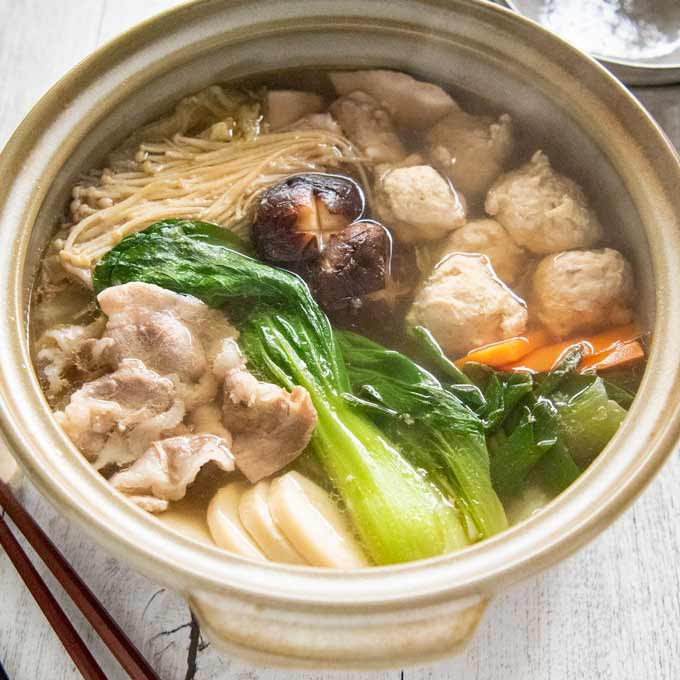

Chankonabe: The Hot Pot of Champions
Chankonabe is a Japanese hot pot dish strongly associated with the sumo wrestlers, also know as rikishi. It is usually made with broth, protein, tofu, and assortment of vegetables, then served in large portions as a filling shared meal.
In sumo stables, or rather heya, chankonabe is more than a normal lunch. It is part of the daily routine that supports their training, recovery, and bulk gains. Because the dish is flexible, recipes can vary and almost universally each heya develop their own. These recipes are a source of pride and tradition for the stable, handed down as closely guarded secrets, with the flavor profile being considered a unique reflection of the stable's culture.

Recipe Ingredients
| Ingredient | Amount | Purpose |
|---|---|---|
| Chicken or chicken meatballs | 1 pound | Adds protein and makes the pot filling. |
| Napa cabbage | 2 to 3 cups | Adds bulk, sweetness, and soft texture. |
| Tofu | 1 block | Adds protein and balances the broth. |
| Mushrooms | 1 cup | Adds earthy flavor and extra texture. |
| Carrots | 1 to 2 carrots | Adds color, sweetness, and body to the stew. |
| Green onions | 4 to 6 cups | Forms the base of the hot pot. |
| Broth | 4 to 6 cups | Forms the base of the hot pot. |
| Soy sauce | 2 to 3 tablespoons | Adds saltiness and savory depth. |
| Mirin | 1 to 2 tablespoons | Adds mild sweetness and balances salty broth. |
| Salt | To taste | Adjust the final flavor of the soup base. |
Basic Cooking Steps
- Prepare the broth in a large pot and bring it to a gentle simmer.
- Season the broth with soy sauce, mirin, and salt as needed.
- Add the chicken or chicken meatballs and cook until nearly done.
- Add desired vegetables and tofu.
- Let the hot pot simmer until the vegetables soften and the flavor combine.
- Serve the chankonabe hot from the pot, often with rice or noodles on the side.